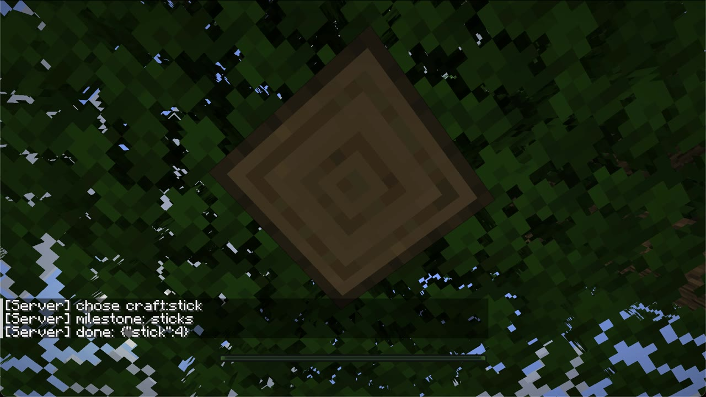
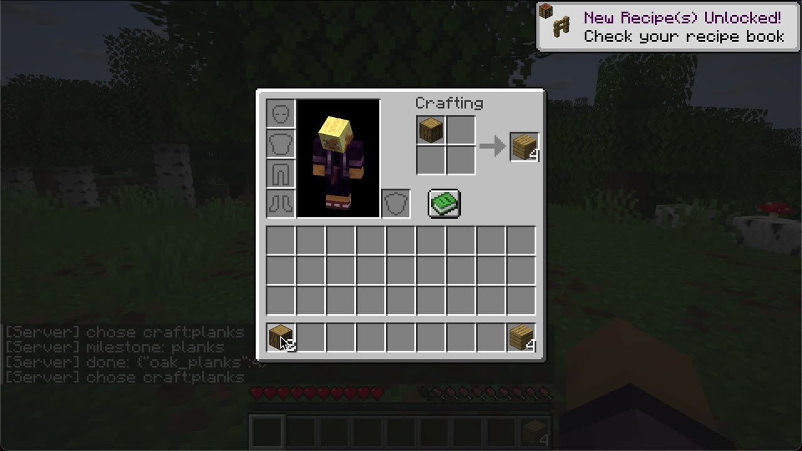
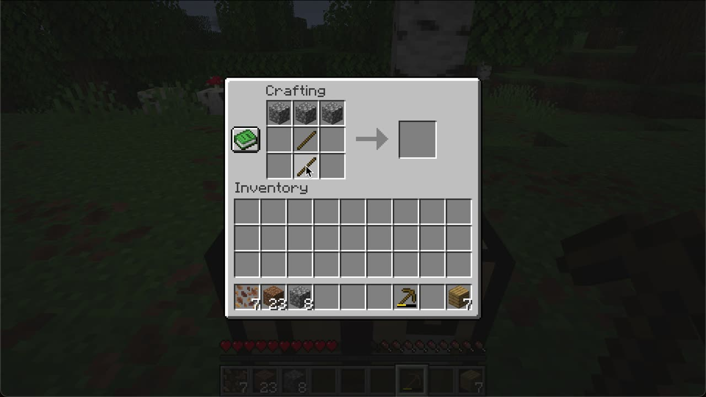

What it looks like

How it works
One seed
Each run deletes the world and makes it again from the same seed, so every run starts on the same land with nothing.
A local model
Every few seconds it reads the state and picks one command from a short menu. It runs on the laptop through llama.cpp. Its weights never change.
Skills as code
Each command is code that does a whole job: walk to a tree and take three logs, make a table and put it down.
A database
What the model saw, its options, its choice, the result, and how long each took. One SQLite file and a log per run.
Claude, in chat
After a run, a Claude session reads the database and rewrites the briefing and the skills. That is the only part that learns.
The versions of the briefing and skills are kept as numbered playbooks, so any run can be matched to exactly what the model was given. The harness itself knows nothing about Minecraft: a game is one adapter, and a small grid game is used to test the harness.
The climb
| Run | Model | Playbook | Decisions | Milestones | What happened |
|---|---|---|---|---|---|
| 12 | Andy-4.2-Micro | v001, raw actions | 25 | 1 | Chose "collect oak log" 25 times. 21 logs, nothing crafted. |
| 13 | Andy-4.2-Micro | v002, automatic rewrite | 25 | 0 | Chose "explore north" 25 times and walked 511 blocks away. |
| 18 | Qwen3.5-0.8B | v003, by hand | 14 | 8 | Stone pickaxe in 7 decisions and 77 seconds of game time. |
| 22 | Qwen3.5-0.8B | v004, by hand | 25 | 11 | Stone pickaxe, then iron, coal and a furnace by decision 13. |
| 25 | Andy-4.2-Micro | v004 | 16 | 11 | The same, with the other model. Furnace at decision 12. |
| 26 | Qwen3.5-0.8B | v004 | 16 | 10 | Played with a game window attached and recorded on video. |
| 31 | Qwen3.5-0.8B | v005o, by an Opus coach | 16 | 11 | All 11 by decision 7. No failed action, no damage. |
| 29 | Qwen3.5-0.8B | v005s, by a Sonnet coach | 16 | 11 | All 11 by decision 6, in half the game time of v004. |
| 34 | Qwen3.5-0.8B | v005s | 9 | 11 | The same playbook played in the real game window, by keys and mouse, on video. All 11, no damage. |
A milestone is a first: first log, planks, sticks, crafting table, table placed, wooden pickaxe, cobblestone, stone pickaxe, iron, coal, furnace. The model was the same size throughout. What changed was the playbook.
What was learned
- A 0.5 GB model repeats itself. Given raw actions or a long list of advice, it picked one command and chose it for the whole run. It mostly takes the first option.
- Whole jobs and short menus fix that. When each command does a complete job and the menu holds only what is useful now, the same model reaches a furnace. Most decisions then have one or two options, so the skill is in the playbook more than in the model. Widening the model's choices again, a step at a time, is future work.
- Rewriting by hand in chat beat the automatic rewrite. The one automatic rewrite made things worse. A Claude session that reads the database, tests a change and takes its time did better, and costs nothing beyond the chat.
- A decision takes about 3.3 seconds on this laptop, or 4.5 with a game window open beside it. This model family re-reads the whole prompt each time on the llama.cpp build used.
- The Minecraft-trained model was not better than the plain one on this evidence. Both reached all 11 milestones with the same playbook.
- Wrong turns are part of the record. A server version nobody could join, a failure blamed on an outside cause that was a reused network connection, a bot that could not put its table down on grass. Each is written up in the notes with what fixed it.
Now playing in the real game window
At first the player was a hidden bot, and the window only watched over its shoulder. A hidden bot has no screen, so nobody can see it open its inventory. The second body plays through the real game window by pressing keys and moving the mouse, so everything on screen is the game's own picture of a player playing. Both bodies take the same commands, so one playbook serves both.


In run 34 the local model made every choice and the real window did the rest: it walked to a tree and felled it from the ground, clicked planks, sticks and a table together in its inventory, put the table down, made a pickaxe at it, dug down to stone, and came back with iron, coal and a furnace. All 11 milestones, no damage, 8 minutes on video. While the model thinks, the inventory is open, as a person might leave it. Between runs the window stays open and goes back into the new world by itself.
It takes about twice the game time of the hidden bot, and it found five faults that no offline test could see, such as a table that was placed but reported as not placed, and cobblestone left lying one block out of reach. The notes say how each was found and fixed.
Two coaches, one brief
Two Claude subagents, a Sonnet 5.5 and an Opus 5.5, were each handed the same playbook and the same stored runs, and each wrote the next version without seeing the other's. The local model stayed the brain in every run.
- Both roughly halved the road. v004 needed 12 to 14 decisions and about 6000 to 6700 game ticks to reach all 11 milestones. The Sonnet coach's playbook needs 6 decisions and about 3300 ticks; the Opus coach's needs 7 to 8 and about 3800 to 4100.
- They found the same main fault by themselves: a long walk back to a far crafting table. Both fixed it by putting a new table down where the work is.
- The Sonnet coach's was faster; the Opus coach's was steadier while being written, and its notes found faults underneath that no playbook can fix. Three runs each on one world is a small sample.
- The cost of the speed: the model is now offered a single option at 13 to 15 of its 16 decisions. The playbook has become a good set of reflexes. The model's choices need to move up a level, to which goal a run goes for and what to do about a threat.
What comes next
- Done
Play through the real window
Walking, digging, picking up, crafting by clicking in the real inventory and crafting table, the inventory open while the model thinks. Reached and filmed in run 34.
- Now
Reflexes: its own kind of mob
A fast layer of plain code that reacts every moment, with no model call: lose health, so close the menu and face the cause; flee or fight; eat; take shelter at night. The model sets the aim, the reflexes keep it alive, and what emerges from the two together is the interesting part.
- Next
The game's own achievements as goals
Each run aims at one of Minecraft's advancements, which the server already announces in its log. Once it gets there, the run plays on freely, to gather what the next playbook needs. A house and a bed come first.
- Then
A corpus of runs
Decisions, model answers, skills called, errors, encounters won and lost, achievements and timings, for every run, with the playbook and code version beside them. Notes for each run go in the repository for whoever reads next.
- Then
Coaches and brains compared
The same runs improved by different coaches, such as two Claude models, to see whose playbooks go further. Then different local models as the brain, and menus widened to find where a small model's judgment holds.
- Later
The long road
Iron tools, shelter, farming, diamonds, the Nether, the End. And a second game, since the harness never knew the first one.
What someone could do with this
- Measure small models on a long task for free. Everything in the loop runs on one old laptop. Swap the model file and the same seed tells you what changed.
- Ask where the skill lives. How much of "playing well" can be moved out of a model's weights and into tools and a briefing? Here that is a number: milestones per run, by playbook version, with the model held still.
- Study improvement itself. Each playbook has a parent and the run that led to it. That is a record of something getting better, step by step, with the mistakes left in.
- Compare coaches. A person, one Claude model, another: give each the same stored run and see whose next version does better.
- Build characters. The same two layers, fast reflexes plus a slow model that sets aims, are a design for game characters that react at once and still surprise you.
- Show it. A run is a video of a small model playing a game it was never trained on, with its choices on screen.
Where things are
- README: what is built, every result, and how to run it.
- The loop, working: a replay of two real runs of the test game.
- notes/roadmap.md and the rest of notes/: the plan, and what each session found.
- The original proposal, kept as it was written.